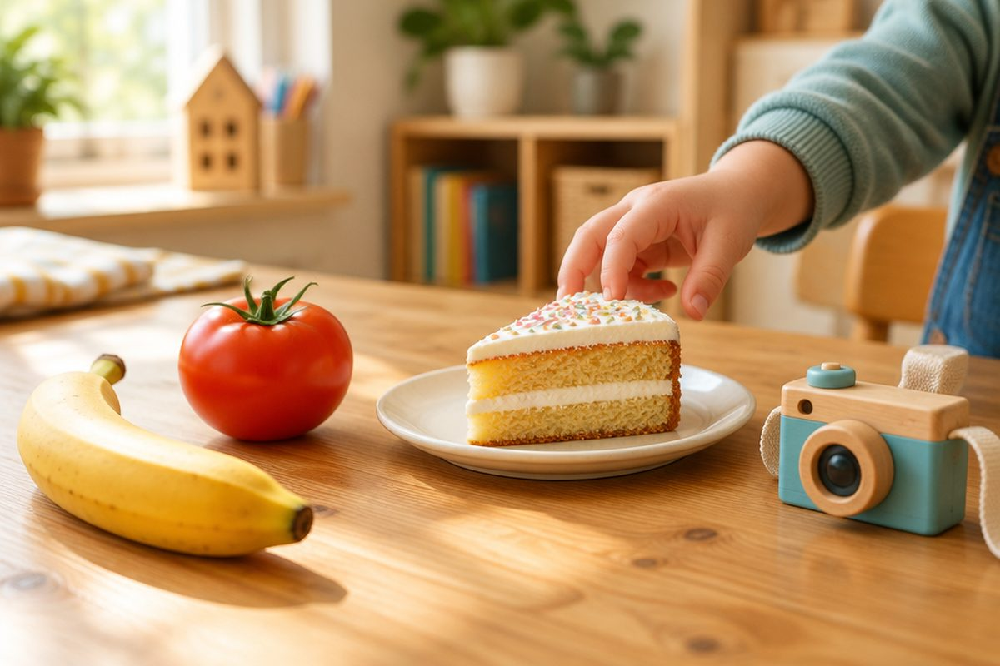

바나나, 케이크를 가타카나로 써 볼까?

일본 편의점에 가면 バナナ(바나나), ケーキ(케-키)처럼 각진 글자가 가득해요. 다른 나라에서 온 말을 쓰는 글자, 가타카나를 맛보기로 배워 봐요.
가타카나는 언제 쓸까?
가타카나는 히라가나와 소리가 똑같고 모양만 각진 글자예요. 히라가나 あいうえお를 가타카나로는 アイウエオ(아 이 우 에 오)라고 써요.
가타카나는 주로 다른 나라에서 들어온 말을 쓸 때 써요. 바나나, 텔레비전, 피아노 같은 낱말이에요.
외국 사람 이름이나 다른 나라 지명도 가타카나로 써요. 우리나라 서울은 ソウル(소우루), 김치는 キムチ(키무치)라고 써요.
バナナ(banana, 바나나) / トマト(tomato, 토마토) / テレビ(terebi, 테레비) 텔레비전 / ピアノ(piano, 피아노)
히라가나와 닮은 가타카나
어떤 가타카나는 히라가나와 아주 닮아서 금방 외울 수 있어요. か와 カ(카), き와 キ(키), り와 リ(리), も와 モ(모), や와 ヤ(야)가 그래요.
へ와 ヘ(헤)는 거의 똑같이 생겼어요. 히라가나를 잘 알면 가타카나도 쉽게 익힐 수 있어요.
탁점(゛)과 반탁점(゜)도 히라가나와 똑같이 붙여요. ハ(하)에 붙이면 バ(바), パ(파)가 돼요.
か → カ / き → キ / へ → ヘ / り → リ / も → モ / や → ヤ
シ와 ツ, ソ와 ン을 구별해요
가타카나에서 가장 헷갈리는 짝은 シ(시)와 ツ(츠), ソ(소)와 ン(응)이에요.
シ와 ン은 마지막 획을 아래에서 위로 올려 써요. ツ와 ソ는 마지막 획을 위에서 아래로 내려 써요.
그래서 シ의 점들은 왼쪽에 세로로 놓이고, ツ의 점들은 위쪽에 가로로 놓여요. 획의 방향을 보면 구별할 수 있어요.
シ(시) ↗ 아래에서 위로 / ツ(츠) ↙ 위에서 아래로 / ン(응) ↗ 아래에서 위로 / ソ(소) ↙ 위에서 아래로
길게 늘이는 막대 ー
가타카나 낱말에서 소리를 길게 늘일 때는 막대 'ー'를 써요. 히라가나에서 う나 あ를 덧붙여 길게 했던 것과 같은 역할이에요.
ケーキ(케-키)는 ケ를 길게, ゲーム(게-무)는 ゲ를 길게 읽어요. ー를 빼먹으면 다른 소리가 되니 꼭 써 주세요.
ケーキ(keeki, 케-키) 케이크 / ゲーム(geemu, 게-무) 게임 / アイス(aisu, 아이스) 아이스크림
핵심 낱말
- 가타카나
- 히라가나와 소리가 같고 모양이 각진 글자. 외국에서 온 말을 쓸 때 써요.
- 외래어
- 다른 나라에서 들어와 쓰이게 된 말. 예: バナナ, テレビ.
- 긴소리 표시 ー
- 가타카나에서 앞 소리를 길게 늘이라는 막대 표시.
꼭 알아야 할 표현
| カタカナ | 가타카나 | katakana (카타카나) |
| アイウエオ | 가타카나 ア행 | a i u e o (아 이 우 에 오) |
| バナナ | 바나나 🍌 | banana (바나나) |
| トマト | 토마토 🍅 | tomato (토마토) |
| テレビ | 텔레비전 📺 | terebi (테레비) |
| ピアノ | 피아노 🎹 | piano (피아노) |
| カメラ | 카메라 📷 | kamera (카메라) |
| ケーキ | 케이크 🍰 | keeki (케-키) |
| ゲーム | 게임 🎮 | geemu (게-무) |
| アイス | 아이스크림 🍦 | aisu (아이스) |
| ソウル | 서울 🇰🇷 | souru (소우루) |
| キムチ | 김치 | kimuchi (키무치) |
한 줄 정리
- 가타카나는 히라가나와 소리가 같고, 다른 나라에서 온 말이나 외국 이름을 쓸 때 써요.
- カ・キ・ヘ・リ・モ・ヤ처럼 히라가나와 닮은 글자부터 익히면 쉬워요.
- シ/ツ, ソ/ン은 획 방향으로 구별하고, ー는 소리를 길게 늘이는 표시예요.
학교 교육과정 연결 (가정 학습 과정)
초등학교 정규 교육과정에는 일본어가 없어요. 처음 배우는 아이를 위한 가정 학습용 입문 단원이에요.